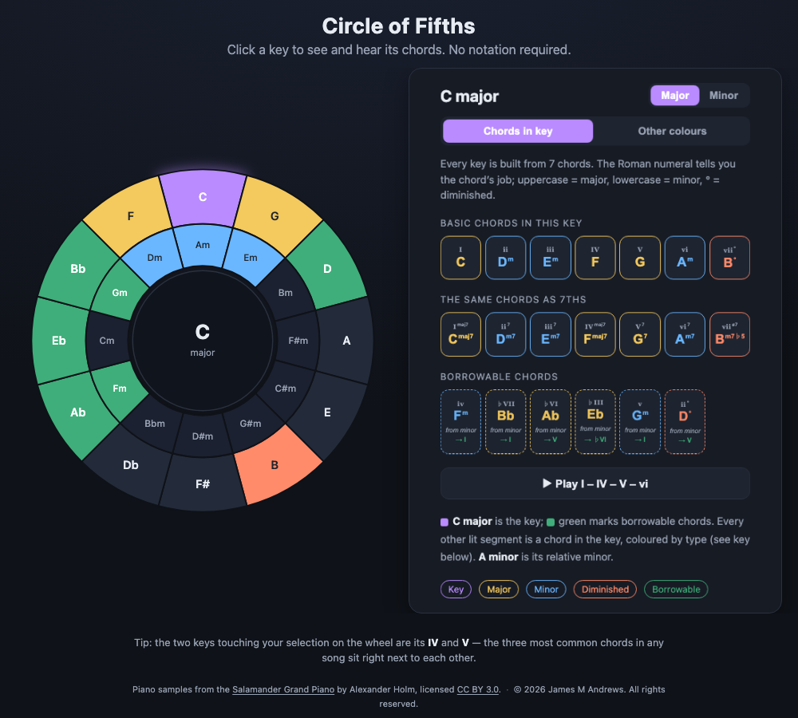
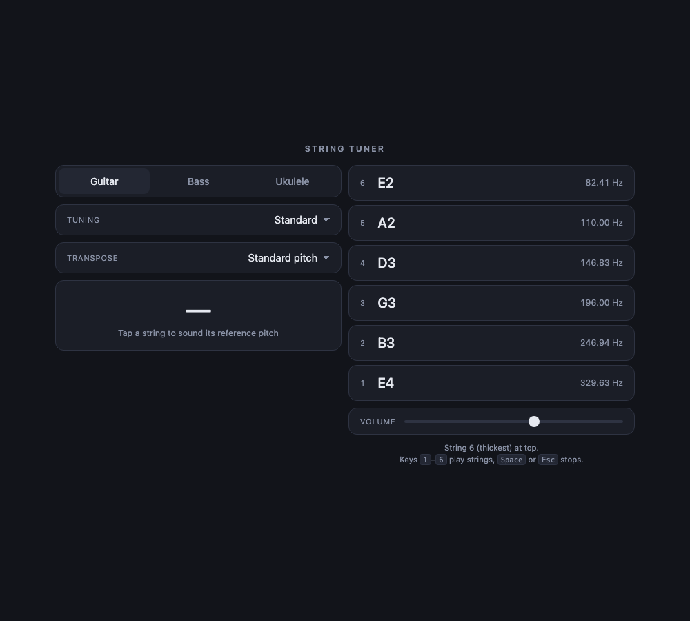

James
Andrews
I’ve been building web applications since 1996 — a regional ISP, agency work for retailers you’ve heard of, a startup I co-founded, and a SaaS platform I built the first version of.
Self-taught, and used to owning a system end to end — architecture, implementation, the third-party integrations, and the Linux and AWS underneath it.
Current work
Two platform generations at Openbridge.
I joined pre-product in 2013 and built the first version of the SaaS application on my own — a Symfony API behind an Angular front end, nothing to production.
In 2020 we replaced it. Different stack, same domain: I was the primary front-end engineer on the new application and carried the business logic across, walking the developer writing the Python API through the rules and the reasoning already baked into the old system. Two builds, two stacks, one product.
The front end I stood up on Angular 8 runs on Angular 21 today, upgraded the whole way rather than left to rot. Currently building the CLI that lets customers point their AI agents at the API.
openbridge.com →- Built v1
- Symfony API, Angular front end, solo
- Rebuild
- Python on Lambda, Angular 8 → 21
- Also shipped
- Stripe billing, OAuth connection management, the move to Auth0
Side projects
Two small tools for learning music without reading notation.

Circle of Fifths
Pick a key, hear its seven chords, see how each one functions. The wheel isn’t decoration — your I, IV and V sit next to each other on it, which is why three chords carry most songs.

String Tuner
Tap a string, hear its pitch, tune to it. No microphone and nothing to install, so it still works in a loud room — which is where pitch detection tends to give up.
Before that
Seventeen years of other people’s websites.
- The Internet Access Company
- Webmaster · 1996–97
- Futurecom.net
- Programmer, jr. systems administrator · 1997–98
- Aquent Partners
- Programmer · 1998–99
- Putnam Investments, BankBoston, NYNEX, Media 100
- Digitas
- Programmer analyst · 1999–2001
- L.L. Bean, Neiman Marcus, FedEx, General Motors, Aetna, Green Mountain Energy
- Cambridge SoundWorks
- Programmer, systems administrator · 2002–05
- Digibug Express
- Senior engineer · 2005–08
- Photo fulfillment and e-commerce, including the Creative Memories account
- Givvy
- Co-founder, engineer · 2007–09
- Contract work
- Between staff roles · 2008–12
- 3Com, iRobot, Blue Cross Blue Shield of Massachusetts, Harvard Business School Publishing, myGengo, Wellogic
Perl CGI on a regional ISP’s shared servers through to e-commerce for Fortune 500 retailers, plus a charitable giving platform I co-founded. Long enough to have watched several approaches arrive, win, and quietly stop being mentioned.
What I work in
- Day to day
- TypeScript · Angular · Python · Django REST Framework · AWS Lambda
- Long familiarity
- PHP · Symfony · JavaScript · Node · SQL · HTML · CSS · SASS · Perl
- Infrastructure
- AWS · EC2 · Linux · Apache · MySQL · serverless · system administration
- Integration
- REST API design · OAuth · Auth0 · Stripe · SOAP · Google APIs
Get in touch
If you want something built, or you use one of the tools and something about it is wrong, I want to hear it.
me@jamesmandrews.com